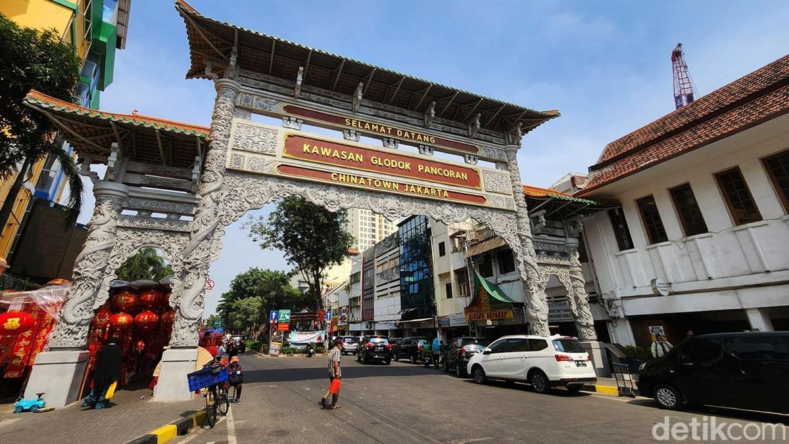
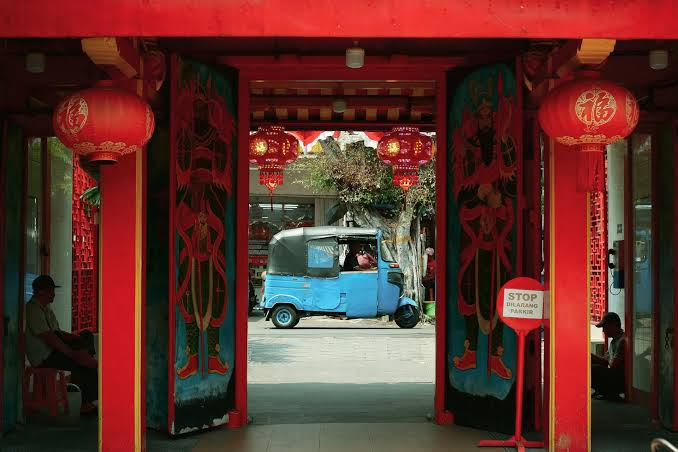
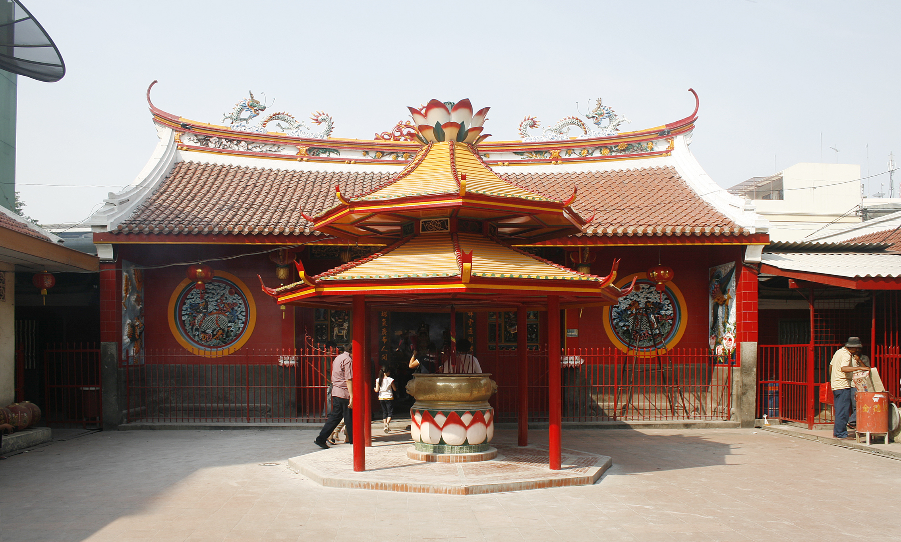
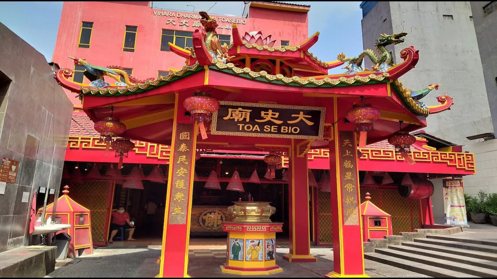
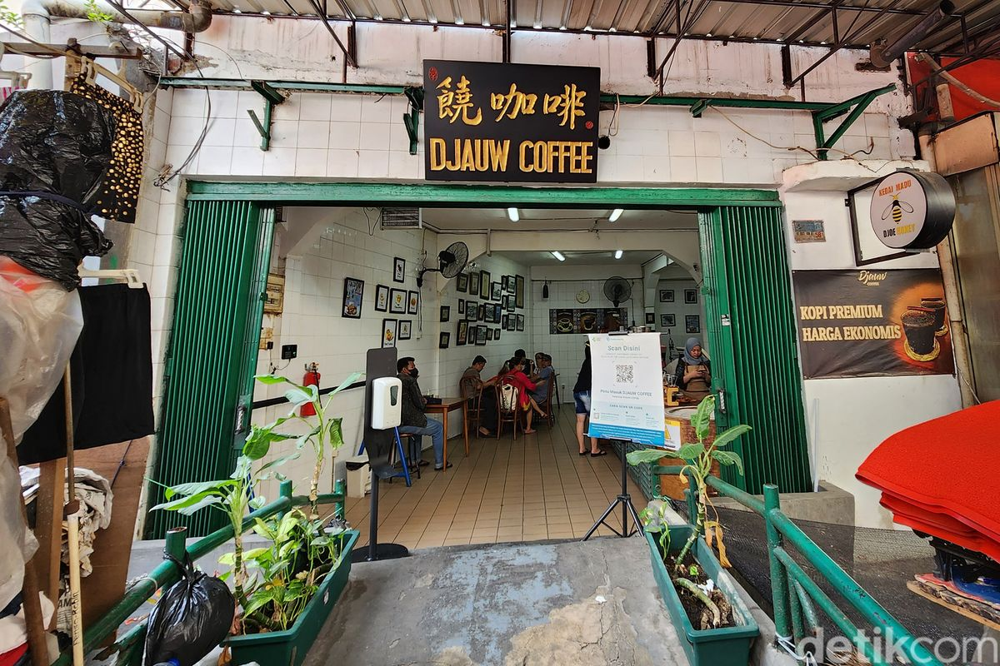
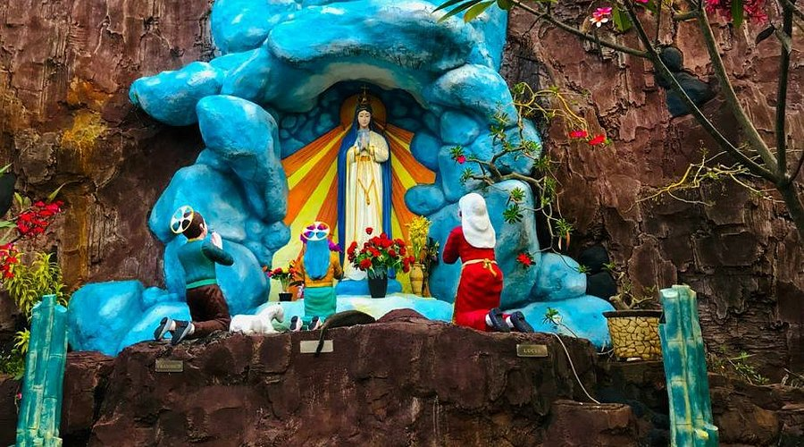

˖᯽GLODOK᯽˖
The Chinatown of Jakarta


Glodok mulai berkembang sebagai kawasan Pecinan setelah Geger Pecinan pada 1740, ketika masyarakat Tionghoa ditempatkan di luar tembok Batavia oleh pemerintah kolonial Belanda. Seiring waktu, Glodok berkembang menjadi pusat perdagangan, kuliner, budaya, dan kehidupan masyarakat Tionghoa di Jakarta. Hingga sekarang, berbagai bangunan bersejarah, vihara, dan tradisi Tionghoa masih menjadi bagian penting dari kawasan ini.
.jpg)
Patjoran Tea House
Kedai teh bersejarah di kawasan Glodok yang menawarkan teh khas Tiongkok, kuliner Tionghoa, dan suasana heritage yang kental. Bangunannya dahulu merupakan apotek dan kini menjadi salah satu tempat yang menarik untuk dikunjungi di kawasan Pecinan Glodok.

Vihara Dharma Bhakti
Salah satu vihara tertua di Jakarta yang berdiri sejak 1650. Terletak di kawasan Petak Sembilan, Glodok, tempat ini memiliki nilai sejarah dan budaya yang kuat dalam perkembangan Pecinan Jakarta.

Vihara Toa Se Bio
Salah satu vihara bersejarah di kawasan Glodok yang dibangun kembali pada 1751. Dengan arsitektur khas Tionghoa dan berbagai ornamen tradisional, vihara ini menjadi bagian dari warisan sejarah dan budaya Pecinan Jakarta.

Djauw Coffe
Kedai kopi bernuansa klasik di kawasan Glodok yang terkenal dengan kopi ala Turki yang diseduh menggunakan pasir panas. Suasananya memadukan nuansa Pecinan dengan sajian kopi dan camilan klasik.

Gereja Santa Maria De Fatima
Gereja Santa Maria de Fatima awalnya merupakan rumah keluarga Tionghoa bermarga Tjioe. Pada 1953, bangunan ini dibeli dan diubah menjadi kompleks gereja, sekolah, dan asrama. Gereja ini terkenal karena memadukan tradisi Katolik dengan arsitektur Tionghoa khas Glodok.